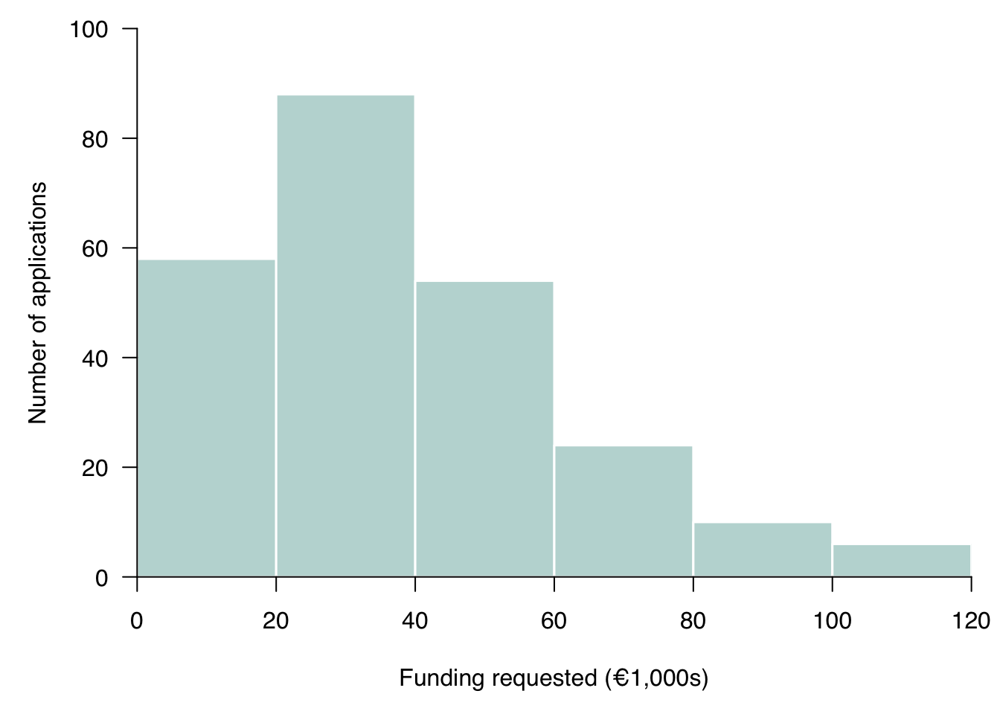

Mock Exam: QM Basic
This mock exam represents the full ten-lecture course. It contains 100 points, so the exam grade is
\[ \text{grade} = \frac{\text{points earned}}{10}. \]
The real exam is closed book. The complete QM Basic Formula Sheet will be attached. Unless a question states otherwise, use a 5% significance level, report units, and show enough work for your method to be checked.
| Question | Topic | Points |
|---|---|---|
| 1 | Data and a histogram | 15 |
| 2 | Probability and a discrete random variable | 20 |
| 3 | Continuous distributions | 15 |
| 4 | Sampling, confidence intervals, and a mean test | 25 |
| 5 | A proportion test, errors, power, and R output | 25 |
| Total | 100 |
Question 1: Data and a histogram — 15 points
An entrepreneurship centre received 240 applications for its accelerator. One row of its dataset represents one application. The variables are:
funding_requested_k: funding requested, in thousands of euros;team_size: number of people named as current venture-team members;sector:Consumer,Manufacturing,Services, orTechnology;accepted: 1 if the application was accepted and 0 otherwise.
The histogram below groups the 240 values of funding_requested_k into
equal-width intervals. The centre wants to describe these 240 applications;
it does not claim that they are a random sample of all new ventures.

- State the observational unit, the sample, and one population to which these data alone should not automatically be generalised. (4 points)
- Classify each of the four variables as categorical or quantitative. For each quantitative variable, also state whether it is discrete or continuous as modelled here. (4 points)
- Explain both axes and interpret the bar covering €20,000 up to but not including €40,000. (3 points)
- Describe the distribution’s shape and identify the interval containing the median. Briefly justify both answers. (4 points)
Model answer and marking guide
- The observational unit is one accelerator application (1 point). The sample is the 240 received applications (1 point). A defensible example of a population not automatically represented is all new ventures in the Netherlands, because applications were not randomly sampled from that population (2 points).
funding_requested_kis quantitative continuous;team_sizeis quantitative discrete;sectoris categorical;acceptedis categorical binary, even though it is coded 0/1 (1 point each).- The horizontal axis gives requested funding in thousands of euros; the vertical axis gives application counts (1 point each). The bar says 88 applications requested at least €20,000 but less than €40,000 (1 point).
- The distribution is right-skewed because most observations are in lower intervals and the counts taper toward larger requests (2 points). The median lies in €20,000–€40,000: 58 observations lie below €20,000, while \(58+88=146\) lie below €40,000, so observations 120 and 121 are in that interval (2 points).
Question 2: Probability and a discrete random variable — 20 points
A separate archive contains 500 televised business pitches. Select one record uniformly at random. Let \(D\) mean that the record shows an on-air deal and let \(W\) mean that at least one woman is represented among the presenters.
| Presenters | On-air deal | No on-air deal | Total |
|---|---|---|---|
| Women represented | 90 | 110 | 200 |
| No women represented | 120 | 180 | 300 |
| Total | 210 | 290 | 500 |
- Calculate \(P(D)\), \(P(W)\), and \(P(D\cap W)\). (6 points)
- Calculate \(P(D\mid W)\) and \(P(W\mid D)\), and explain why they answer different questions. (6 points)
- Are \(D\) and \(W\) independent in this empirical probability model? Show a valid numerical check. (4 points)
- Define \(X=1\) for an on-air deal and \(X=0\) otherwise. Give the PMF of \(X\), \(E[X]\), and \(\operatorname{Var}(X)\). (4 points)
Model answer and marking guide
- \(P(D)=210/500=0.42\), \(P(W)=200/500=0.40\), and \(P(D\cap W)=90/500=0.18\) (2 points each).
- \(P(D\mid W)=90/200=0.45\) and \(P(W\mid D)=90/210\approx0.429\) (2 points each). The first restricts the denominator to pitches with women represented; the second restricts it to pitches with a deal (2 points).
- They are not independent: for example, \(P(D\mid W)=0.45\ne P(D)=0.42\) (4 points). Equivalently, \(P(D\cap W)=0.18\ne0.42\times0.40=0.168\).
- \(p_X(1)=0.42\), \(p_X(0)=0.58\) (2 points), \(E[X]=0.42\), and \(\operatorname{Var}(X)=0.42(0.58)=0.2436\) (1 point each).
Question 3: Continuous distributions — 15 points
Let \(X\sim U(10,30)\) represent a waiting time in minutes. Separately, let \(Y\sim N(50,10^2)\) represent a processing time in minutes. The following standard-normal probabilities are supplied:
P(Z <= 1.5) = 0.9332
P(Z <= 1.0) = 0.8413
P(Z <= -1.0) = 0.1587- State the PDF height of \(X\), including its value outside the support. (3 points)
- Calculate \(P(14<X<20)\), \(E[X]\), and \(\operatorname{Var}(X)\). (5 points)
- Standardise 65 minutes under the model for \(Y\), then calculate \(P(Y\le65)\). (3 points)
- Calculate \(P(40<Y<60)\). (2 points)
- Explain why a PDF height is not itself a probability. (2 points)
Model answer and marking guide
- \(f_X(x)=1/(30-10)=0.05\) for \(10\le x\le30\), and \(f_X(x)=0\) outside that interval (3 points).
- \(P(14<X<20)=(20-14)/(30-10)=0.30\) (2 points), \(E[X]=(10+30)/2=20\) (1 point), and \(\operatorname{Var}(X)=(30-10)^2/12=33.33\) square minutes (2 points).
- \(z=(65-50)/10=1.5\), so \(P(Y\le65)=0.9332\) (3 points).
- \(P(40<Y<60)=P(-1<Z<1)=0.8413-0.1587=0.6826\) (2 points).
- Probability is area over an interval: approximately density times a small interval width. A point has zero width and hence zero probability for a continuous variable (2 points).
Question 4: Sampling, confidence intervals, and a mean test — 25 points
From a frame of 1,000 accelerator applicants, a simple random sample of 64 was
selected without replacement. For each sampled applicant, prep_hours is the
number of hours spent preparing the application. Let \(\mu\) be the mean
preparation time among all 1,000 applicants. The sample has
\(\bar x=18.4\) hours and \(s=8.0\) hours. R produced:
One Sample t-test
data: prep_hours
t = 2.400, df = 63, p-value = 0.0193
alternative hypothesis: true mean is not equal to 16
95 percent confidence interval:
16.40 20.40
sample estimate:
mean of x = 18.40- Identify the parameter, estimator, and realised estimate. (3 points)
- Calculate the estimated standard error of the sample mean. (3 points)
- State \(H_0\) and \(H_1\), and verify the reported t statistic. (5 points)
- Explain why \(df=63\). (3 points)
- Interpret the p-value and give the test decision in context. (5 points)
- Interpret the 95% confidence interval. (3 points)
- Check the 10% condition and state what the sampling design supports. Do not make a causal claim. (3 points)
Model answer and marking guide
- The parameter is \(\mu\), the frame’s population mean preparation time; the estimator is \(\bar X\); the realised estimate is 18.4 hours (1 point each).
- \(\widehat{\operatorname{SE}}(\bar X)=S/\sqrt n=8/\sqrt{64}=1\) hour (3 points).
- \(H_0:\mu=16\) against \(H_1:\mu\ne16\) (2 points). \(t=(18.4-16)/1=2.4\) (3 points).
- After the sample mean is estimated, 63 of the 64 deviations can vary freely; the last is fixed by their sum of zero, so \(df=n-1=63\) (3 points).
- If the frame mean were 16 hours and the test conditions held, the probability of a t statistic at least as far from zero as 2.4 in either direction would be 0.0193 (3 points). Because \(0.0193<0.05\), reject \(H_0\); the sample provides evidence that the frame mean differs from 16 hours (2 points).
- Under repeated valid sampling, 95% of intervals constructed by this method would contain the frame mean. For this sample, plausible values run from 16.40 to 20.40 hours (3 points).
- \(64\le0.10(1000)=100\), so the course’s independence approximation is reasonable (1 point). The random sample supports generalisation to the 1,000-applicant frame, subject to nonresponse and measurement quality; it does not identify a causal effect because nothing was randomly assigned (2 points).
Question 5: A proportion test, errors, power, and R output — 25 points
In a simple random sample of 400 former accelerator participants, 232 had launched a trading venture within one year. Let \(p\) be the launch proportion among all former participants in the sampling frame. A two-sided test of \(H_0:p=0.50\) is planned.
The same study also fits a regression with monthly revenue measured in thousands of euros as the outcome and weekly mentoring hours as a predictor. One row of the supplied R output is:
Estimate Std. Error t value Pr(>|t|) 95% CI
mentoring_hours 0.80 0.25 3.20 0.0016 [0.31, 1.29]- Check the success–failure condition under \(H_0\). (3 points)
- Calculate \(\hat p\), its null standard error, and the z statistic. (5 points)
- The two-sided p-value is 0.0014. Interpret it and state the test conclusion. (4 points)
- A large-sample 95% confidence interval for \(p\) is \((0.532,0.628)\). Interpret it and explain why it agrees with the test decision. (4 points)
- Define a Type I error in this test. State two changes that would increase power while holding the significance level fixed. (4 points)
- Interpret the mentoring coefficient, its test against zero, and the limit on causal language. (5 points)
Model answer and marking guide
- Under \(H_0\), \(np_0=400(0.50)=200\) and \(n(1-p_0)=200\), both at least 10 (3 points).
- \(\hat p=232/400=0.58\) (1 point), the null SE is \(\sqrt{0.50(0.50)/400}=0.025\) (2 points), and \(z=(0.58-0.50)/0.025=3.20\) (2 points).
- If \(p=0.50\), the probability of a z statistic at least as far from zero as 3.20 in either direction is about 0.0014 (2 points). Reject \(H_0\); there is evidence that the frame launch proportion differs from 0.50 (2 points).
- Plausible values for the frame launch proportion range from 0.532 to 0.628 under the method’s conditions (2 points). Zero is excluded from the equivalent interval for \(p-0.50\), so the interval and two-sided 5% test both reject the zero difference (2 points).
- A Type I error is concluding that the frame launch proportion differs from 0.50 when it actually equals 0.50 (2 points). Any two of a larger sample, a larger true difference from 0.50, or less measurement noise earn 1 point each. Increasing \(\alpha\) is not accepted because the question holds it fixed.
- Among the observed participants, one additional weekly mentoring hour is associated with 0.80 thousand euros (€800) higher fitted monthly revenue (2 points). The row tests \(H_0:\beta=0\); \(p=0.0016\) and the interval excludes zero, so reject at 5% (2 points). Without random assignment or a defensible causal design, this is an association rather than the causal effect of adding an hour of mentoring (1 point).
Your marks across the five questions should sum to 100. When practising, complete the exam before expanding the model answers, then use the marking guide to identify whether lost points came from calculation, interpretation, units, conditions, or scope.